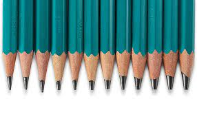

Bienvenido al colorido mundo de Prismacolor®. Dibuja intrincados retratos y paisajes con nuestra vívida gama de lápices de colores premium. Perfeccione sus letras a mano utilizando marcadores Prismacolor® de alta definición como nuestros marcadores Premier® Chisel Fine Art para una consistencia de color uniforme. Desliza delicadamente el color sobre el papel en capas como una pintura con pasteles cremosos como nuestros Pasteles Duros Premier® NuPastel®. Facilite el proceso artístico utilizando nuestros accesorios profesionales con borradores de lápices, estuches y sacapuntas. Deja que tu imaginación te guíe con nuestros juegos de colores para adultos para llevar tus diseños a un nuevo nivel. Ilustra lo que el arte significa para ti con Prismacolor®.

lápices Desde colorear hasta dibujar, los lápices de colores Prismacolor lo tienen cubierto sin importar cuál sea su último proyecto.
lmarcadores Dale un poco de amor a tu paleta de colores con los marcadores de arte Prismacolor. Una gran cantidad de consejos y colores le permiten expresar su visión con vitalidad y facilidad.
grafito Crea bocetos técnicos o dibujos de bellas artes con grafito Prismacolor. Los cables de alta calidad están disponibles en una amplia gama de tonos.
gpasteles Sal del mundo de las líneas bien definidas con Prismacolor Nu Pastels. Explore sus opciones con estos pasteles de calidad, haciendo algunos nuevos descubrimientos en el camino.
Prismacolor Es una marca de suministros para artistas profesionales originada por Berol en 1938, y ahora fabricado por Newell Brands. Entre los artículos de la línea Prismacolor se encuentran los lápices de colores, Arte Stix, pasteles, acuarelas, y marcadores de arte permanente a base de alcohol.
Los Prismacolor Premier blandos son considerados por muchos como los mejores lápices del mundo. Recomendados por profesores de muchas escuelas de arte, sus detractores se quejan de que los tonos son translúcidos o de la mala calidad de la madera (y de su laqueado), mientras que los que los apoyan sostienen que son los mejores lápices por su textura cremosa, saturación del pigmento y capacidad de mezcla. Es un lápiz que despierta rechazo o pasiones, pero es innegable que sigue siendo uno de los más famosos y reconocidos del mundo.
Desea regresar a la pagina principal
index